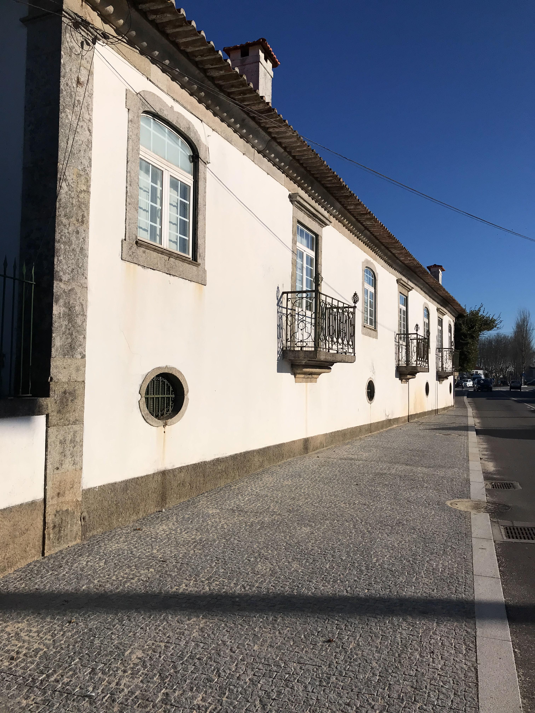
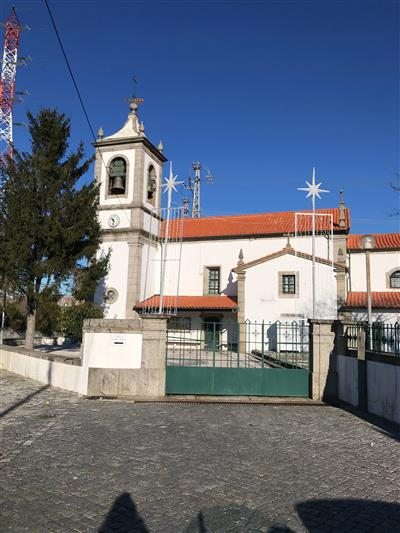
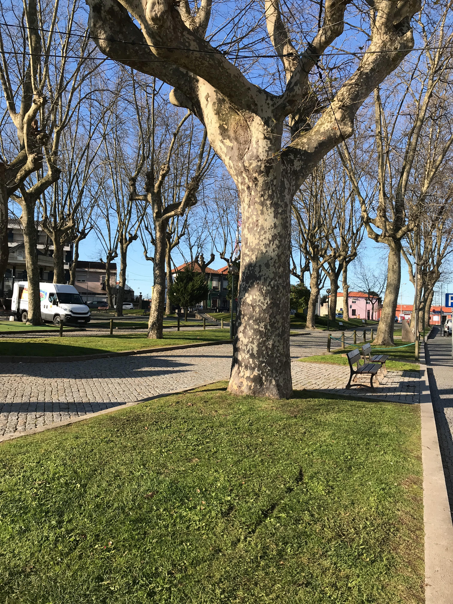
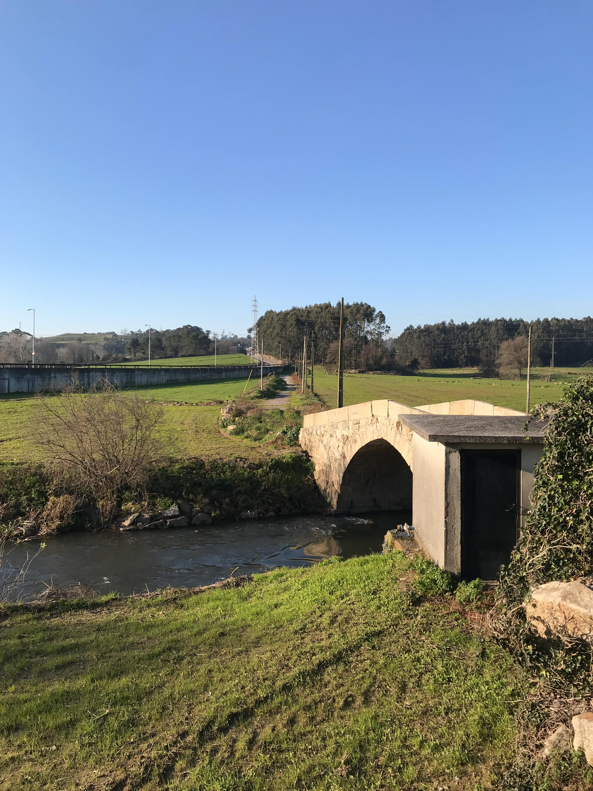
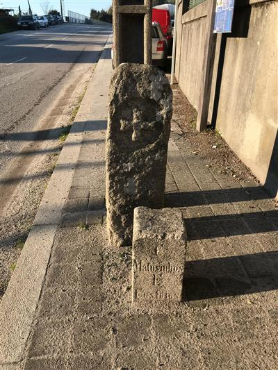

CAMINHOS DE SANTIAGO
CAMINHO PORTUGUÊS DA COSTA
CAMINHO PORTUGUÊS CENTRAL
CAMINHO DA ORLA ATLÂNTICA
CAMINHO PORTUGUÊS CENTRAL
MATOSINHOS
Caminho completo
Porto
Matosinhos
Maia
Vila do Conde
Póvoa de Varzim
Barcelos
Ponte de Lima
Paredes de Coura
Valença
i
PATRIMÓNIO
01 / 05
Cruzeiro do Padrão da Légua
02 / 05

Casa de Santiago
03 / 05

Igreja Paroquial de Santiago de Custóias
04 / 05

Largo do Souto
05 / 05

Ponte Medieval de Dom Goimil
06 / 06

Marco do Couto de Leça da Ordem de Malta
❮
❯